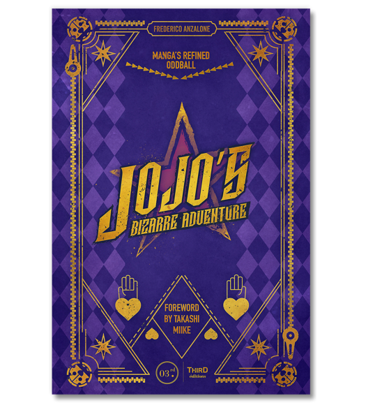
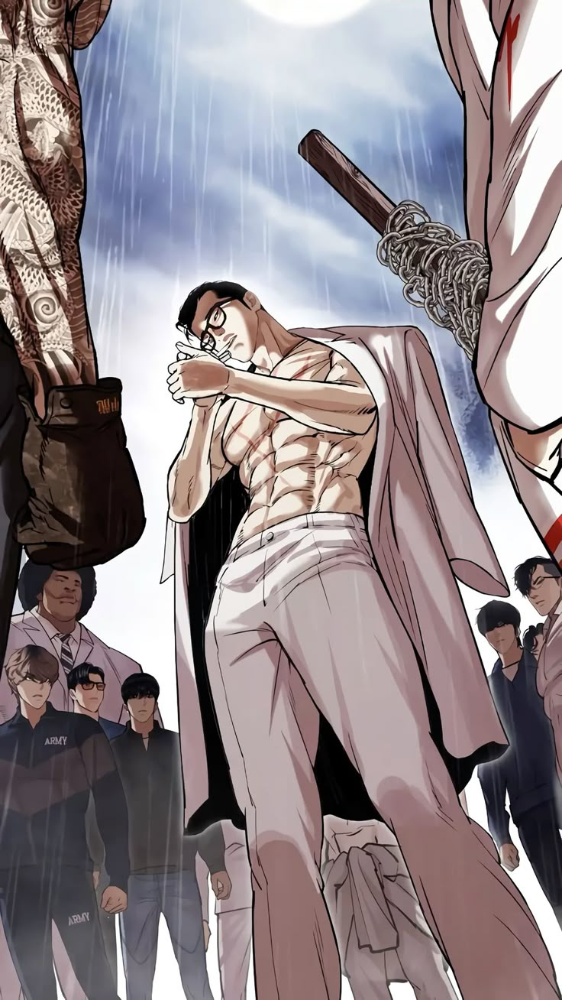
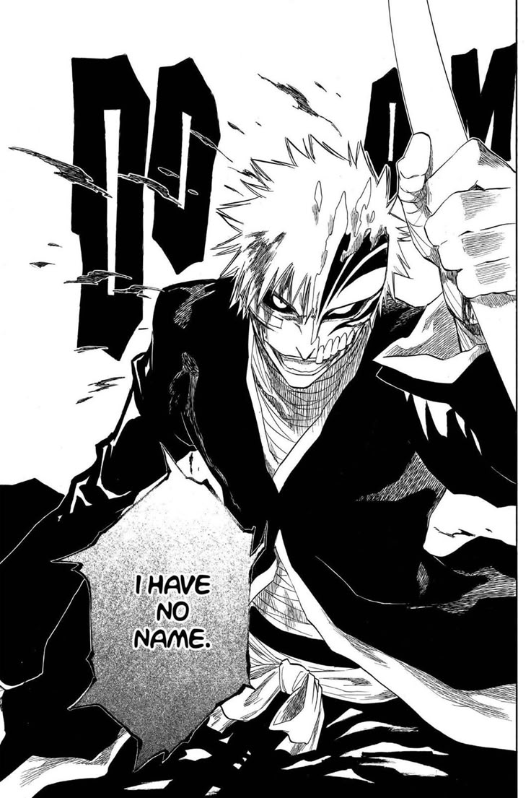

HTML
Ik gebruik HTML om pagina's logisch op te bouwen met headings, sections, links, afbeeldingen en duidelijke tekststructuur.
Wat ik kan
Mijn vaardigheden zitten op dit moment vooral in webtechnieken, probleemoplossend denken en creatief werken met digitale tools.
Ik gebruik HTML om pagina's logisch op te bouwen met headings, sections, links, afbeeldingen en duidelijke tekststructuur.
Met CSS werk ik aan kleuren, typografie, spacing en layouts met Flexbox en CSS Grid.
Ik gebruik JavaScript vooral voor kleine interacties, zoals het openen en sluiten van het mobiele navigatiemenu.
Rocket League leert mij snel reageren, patronen herkennen en blijven oefenen om beter te worden.

Manga, manhwa en games zorgen ervoor dat mijn portfolio wat meer energie heeft dan een standaard zakelijke website. De bedoeling is dat de site nog steeds overzichtelijk blijft, maar wel bij mij past.

Gun Park is one of the most feared and powerful characters in Lookism. He is known as an absolute monster in terms of strength - no one has ever managed to defeat him. At one point in the manhwa, he fought against thousands of people at the same time and still came out undefeated. Every major fighter in the story feared going up against him. He is cold, calculated and overwhelmingly strong, making him one of the most memorable antagonists in the entire series.

Ichigo Kurosaki is the main character of Bleach and one of the most powerful beings in the entire series. He starts off as a regular teenager who accidentally absorbs the powers of a Soul Reaper, but over time he awakens multiple forms of power that go far beyond anything seen before. His hollow form - where he loses control and lets his inner hollow take over - is one of the most terrifying and iconic moments in the manga. At his peak, Ichigo possesses the powers of a Soul Reaper, a Hollow, a Fullbring and a Quincy all at once, making him virtually unstoppable. No matter how many times he gets knocked down, he always finds a way to get back up and push past his limits.